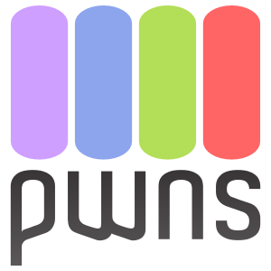

Istra쬴vanje i razvoj
Razvoj online kolegija Optimizacija programskog koda (Code optimization) na Sveučilištu u Rijeci u akademskoj 2020/2021. i 2021/2022. godini
Podaci o osobama odgovornim za provedbu projekta
VODITELJ PROJEKTA (u prilogu dostaviti CV)
Ime i prezime: dr. sc. Vedran Miletić
Sastavnica Sveučilišta u Rijeci: Odjel za informatiku
Znanstveno-nastavno zvanje: Znanstveni suradnik, zaposlen na radnom mjestu višeg predavača
e-mail: vmiletic@inf.uniri.hr
IZVODITELJI PROJEKTA
1.
Ime i prezime: dr. sc. Vedran Miletić
Sastavnica Sveučilišta u Rijeci: Odjel za informatiku
Zvanje: Znanstveni suradnik, zaposlen na radnom mjestu višeg predavača
E-mail: vmiletic@inf.uniri.hr
Uloga u projektu: Voditelj projekta i izvoditelj projekta (nositelj kolegija i asistent)
2.
Ime i prezime: Mia Doričić
Sastavnica Sveučilišta u Rijeci: Odjel za informatiku
Zvanje: Studentica, demonstratorica
E-mail: mia.doricic@student.uniri.hr
Uloga u projektu: Pomoćnica u izradi zadataka za vje쬭e i domaće zadaće
Podaci o kolegiju (ako je postojeći)
Naziv kolegija: Optimizacija programskog koda (Code optimization)
Nositelj kolegija: doc. dr. sc. Miran Pobar / dr. sc. Vedran Miletić
Sastavnica Sveučilišta u Rijeci: Odjel za informatiku
Studijski program: Preddiplomski studij informatike
Godina studijskog programa: 3
Status kolegija: Obvezan/Izborni
ECTS bodovi kolegija: 5
Broj sati (P+S+V): 30+0+30
Dosadašnji način izvođenja nastave
Kolegij će se prvi put izvoditi u akademskoj godini 2021/2022 kao i preostali kolegiji na 3. godini novog preddiplomskog studijskog programa "Informatika" čija je izvedba započela akademske godine 2019/2020.
Razina sadašnje primjene alata e-učenja
Kolegij se dosad nije izvodio, ali planirana je bila razina A prema "Preporukama za izradu obrazovnih materijala za e-učenje".
Dodatne informacije o kolegiju (navesti podatke za koje predlagatelji smatra da su va쬹i za projekt)
Ovaj kolegij se bavi tehničkim izazovima područja suvremenog digitalnog društva, što ga čini posebno prikladnim za YUFE koji navodi upravo "Digitano društvo" kao jedno od strateških područja. Kolegij upoznaje studente s temeljnim načelima optimizacije programske podrške koja stoji u pozadini sveprisutnog računarstva u društvu. U suvremeno doba se optimizacija programske podrške primjenjuje na računalima svih veličina i namjena: malenim uređajima koji čine internet stvari, pametnim telefonima i satovima, računalima koja se koriste u kasama i bankomatima, osobnim računalima na kojima se izvode web preglednici i igre, budućim samovozećim automobilima, velikim superračunalima kao što je Bura na Sveučilištu u Rijeci i drugim.
Kolegij je dio modula "Razvoj programske potpore" preddiplomskog studija informatike i formalno nasljeđuje kolegije iz područja programiranja na 1. i 2. godini preddiplomskog studija obzirom da zahtijeva predznanje iz programiranja, struktura podataka i algoritama. Slijedom prisustva kolegija koji pokrivaju ta predznanja na raznim studijima u području prirodnih i tehničkih znanosti moguće je ovaj kolegij, osim studentima informatike i računarstva, ponuditi i drugim zainteresiranim studentima koji imaju odgovarajuća predznanja.
Svi računalni programi koje će studenti koristiti tijekom izvedbe kolegija bit će odabrani tako da se radi o slobodnoj programskoj podršci, odnosno programskoj podršci otvorenog koda (engl. free and open source software). To će olakšati izvedbu i otvoriti kolegij prema svim zainteresiranim studentima jer neće biti potrebe za nabavkom specijalizirane i često vrlo skupe komercijalne programske podrške, bilo od strane sveučilišta, bilo od strane studenata samih.
Opis projekta razvoja online kolegija
Naziv kolegija
Optimizacija programskog koda (Code optimization)
Opis očekivanih ulaznih kompetencija studenata (preduvjeti za upis kolegija, uključujući potrebnu CEFR razinu poznavanja engleskog jezika)
Preduvjet za upis kolegija su polo쬰ni predmeti koji obrađuju programiranje, strukture podataka i algoritme neovisno o programskom jeziku. Potrebna CEFR razina poznavanja engleskog jezika je najmanje B2.
Ukupni broj studenata koji mogu pohađati kolegij u jednoj izvedbi
50
Broj studenata kojima se kolegij mo쬰 ponuditi
- u sklopu YUFE: 10
- u sklopu interne mobilnosti: 10
Početak izvedbe kolegija u 2020./21. (navesti datum)
Početak zimskog semestra akademske godine 2021/2022., pribli쬹o 1. listopad 2021.
Očekivani ishodi učenja na kolegiju
Nakon učenja i izvršavanja svih kolegijem predviđenih aktivnosti i obaveza student će moći:
I1. Analizirati svojstva koja omogućuju transformaciju programskog koda i prikazati programski kod grafom toka.
I2. Prikazati razlike između lokalne i globalne optimizacije te identificirati gdje se svaka od njih primjenjuje.
I3. Provesti klasičnu analizu toka podataka, alokaciju registara bojenjem registara i eliminaciju zajedničkih podizraza.
I4. Opisati način rada optimizacije višeg nivoa i primijeniti postojeće optimizacije.
I5. Opisati razlike optimizacija višeg nivoa i optimizacija ovisnih o ciljnoj arhitekturi.
I6. Provesti odabir instrukcije.
I7. Analizirati problem redoslijeda faza optimizacije.
Ciljevi i sadr쬬j kolegija (max 250 riječi)
Cilj ovog kolegija je uvesti temeljna načela i metode optimizacije programskog koda na razini apstraktne sintakse, grafa toka programa i izvršnog (strojnog) koda.
Sadr쬬j kolegija:
- Pregled optimizirajućeg prevoditelja programskog jezika. Optimizacija po dijelovima. Analiza svojstava koja omogućuju transformaciju. Graf toka i reprezentacija programskih koncepata. Problem redoslijeda faza optimizacije.
- Vrste optimizacije. Lokalna optimizacija: optimizacija kroz okance, zakazivanje instrukcija. Globalna optimizacija: zajednički podizrazi, kretanje koda. Interproceduralna optimizacija. Graf poziva.
- Klasična analiza toka podataka. Algoritmi na grafovima, skupovi 쬴vih i dostupnih varijabli. Alokacija registara bojenjem registara. Eliminacija zajedničkih podizraza. Prolijevanje u memoriju; baratanje privremenim izrazima uvedenim kod eliminacije zajedničkih podizraza. Anomalije toka podataka. Oblik statičke jednostruke dodjele vrijednosti varijablama.
- Pregled optimizacija višeg nivoa. Analiza memorijskih lokacija na koje varijable pokazuju i analiza pseudonima.
- Optimizacija ovisna o ciljnoj arhitekturi. Odabir instrukcije. Zakazivanje instrukcija i povezani problem redoslijeda faza optimizacije.
Pristupi učenju i poučavanju -- stjecanju ishoda učenja
Ishodi učenja stječu se kroz više aktivnosti:
- Prisutnost na online nastavi (1 ECTS) -- redovito praćenje i proučavanje online materijala u tekstualnom i multimedijskom obliku (slike, prezentacije, asinkrone video lekcije, sinkrone video konferencije, video resursi)
- Pisani osvrti (0,5 ECTS) -- kraći pisani osvrti na zadanu temu uz korištenje danih i samostalno pronađenih izvora; studenti daju procjenu nekolicine tuđih radova, a nastavnik ocjenjuje sve radove
- Domaće zadaće (1,5 ECTS) -- zadaci iz gradiva vje쬭i zadani za samostalno rješavanje studenata uz predaju rješenja u danom roku
- Praktični rad (1 ECTS) -- grupni ili pojedinačni rad na implementaciji danih tehnika optimizacije programskog koda te dokumentiranje, testiranje i prezentacija implementacije
- Online testovi (1 ECTS) -- provjere znanja gradiva predavanja u obliku pitanja višestrukog izbora, kratkog odgovora, uparivanja, nadopunjavanja riječi i sl.
Pristupi vrednovanju i ocjenjivanju (navesti načine provođenja vrednovanja i ocjenjivanja)
Provjera ishoda učenja vrši se preko sljedećih procjena znanja:
- Prisutnost na online nastavi (I1--I7): Provjera tjedne studentske aktivnosti, sudjelovanja i vremena provedenog u radu na online kolegiju (npr. izvještaji i statistika iz sustava za e-učenje Merlin ili Canvas).
- Pisani osvrti (I1, I2, I4, I5, I7): U pisanim osvrtima na zadanu temu student pokazuje razumijevanje gradiva iz online lekcije korištenjem radionice s vršnjačkom procjenom u okviru suvremenog alate za e-učenje (npr. Merlin, Canvas). Vrednovat će kvaliteta obrade teme i razumijevanje proučenih izvora, kao i kvaliteta procjene radova drugih studenata nakon predaje vlastitog osvrta. Primjeri tema za pisanje osvrta mogu biti "Odaberite tri optimizacijske tehnike implementirane u nekom program prevoditelju otvorenog koda i opišite njihov način rada" ili "Usporedite posredne jezike LLVM IR i GCC GENERIC/GIMPLE".
- Domaće zadaće (I1, I2, I3, I4, I6): Praktična provjera znanja kod koje se tra쬴 da student analizira i transformira zadani programski kod te koristi i po potrebi prilagođava postojeće optimizacije. Primjeri zadataka mogu biti "Na zadanom programskom kodu provedite eliminaciju zajedničkih podizraza" ili "Pronađite sve optimizacije među onima obrađenima na kolegiju koje se mogu uspješno provesti na zadanom programskom kodu".
- Praktični rad (I1, I2, I3, I4, I6): U praktičnom radu studenti u grupama po troje, dvoje ili pojedinačno prema zadanim uputama implementiraju dane tehnike optimizacije programskog koda, pišu dokumentaciju i vrše testiranje vlastite implementacije. Primjerice, teme praktičnog rada mogu biti "Implementacija odmotavanja petlje for" ili "Implementacija brojanja globalnih vrijednosti".
- Online testovi (I1, I2, I4, I5, I7) Online provjera znanja u kojima student pokazuje razumijevanje teorijskih koncepata optimizacije programskog koda.
Pribli쬬n vremenski plan nastavnih aktivnosti i opterećenja studenata (navesti ukupno trajanje kolegija u tjednima, navesti veće nastavne cjeline i planirane nastavne aktivnosti te pripadajuće procijenjeno vremensko opterećenje studenata u satima; navesti planirane provjere znanja)
Ukupno trajanje kolegija je 15 tjedana (jedan semestar).
| Nastavna cjelina | Nastavne aktivnosti | Trajanje / tj. | Opterećenje studenta / h |
|---|---|---|---|
| 1. | Pregled optimizirajućeg prevoditelja programskog jezika. Optimizacija po dijelovima. Analiza svojstava koja omogućuju transformaciju | 1 | 5 |
| 2. | Graf toka i reprezentacija programskih koncepata. Problem redoslijeda faza optimizacije. 1. pisani osvrt | 1 | 7 |
| 3. | Vrste optimizacije. Lokalna optimizacija: optimizacija kroz okance, zakazivanje instrukcija | 1 | 5 |
| 4. | Globalna optimizacija: zajednički podizrazi, kretanje koda. 1. domaća zadaća | 1 | 14 |
| 5. | Interproceduralna optimizacija. Graf poziva | 1 | 5 |
| 6. | 1. test | 1 | 14 |
| 7. | Klasična analiza toka podataka. Algoritmi na grafovima, skupovi 쬴vih i dostupnih varijabli. 2. pisani osvrt | 1 | 7 |
| 8. | Alokacija registara bojenjem registara. Eliminacija zajedničkih podizraza | 1 | 5 |
| 9. | Prolijevanje u memoriju; baratanje privremenim izrazima uvedenim kod eliminacije zajedničkih podizraza. Anomalije toka podataka. 2. domaća zadaća | 1 | 14 |
| 10. | Oblik statičke jednostruke dodjele vrijednosti varijablama. Odabir teme praktičnog rada | 1 | 6 |
| 11. | Pregled optimizacija višeg nivoa. Izrada praktičnog rada. | 1 | 11 |
| 12. | Analiza memorijskih lokacija na koje varijable pokazuju i analiza pseudonima. Izrada praktičnog rada | 1 | 11 |
| 13. | Optimizacija ovisna o ciljnoj arhitekturi. Odabir instrukcije. Izrada praktičnog rada. | 1 | 11 |
| 14. | Zakazivanje instrukcija i povezani problem redoslijeda faza optimizacije. Izrada praktičnog rada | 1 | 11 |
| 15. | 2. test. Predaja praktičnog rada | 1 | 14 |
Vremenski plan izvršenja projekta (navesti aktivnosti i rezultate pojedinih faza projekta)
Projekt će se provesti u 7 faza.
| Faza | Trajanje | Aktivnosti i rezultati |
|---|---|---|
| 1. | 15. 11. 2020. -- 31. 1. 2021. | Aktivnosti: Nabava literature za izradu online lekcija. Nabava opreme koja će, uz postojeća računala na Odjelu za informatiku, biti korištena za izučavanje optimizacije programskog koda na praktičnim primjerima te usporedbu optimizacija programskog koda na različitim arhitekturama. Priprema razvojne okoline (program prevoditelji, programi za ispravljanje pogrešaka, integrirana razvojan okru쬰nja i dr.) na postojećoj i nabavljenoj opremi. Rezultati: Nabavljena literatura i oprema; postavljena razvojna okolina. |
| 2. | 1. 2. 2021. -- 28. 2. 2020. | Aktivnosti: Proučavanje literature i priprema nacrta sadr쬬ja online lekcija. Izrada detaljnog izvedbenog nastavnog plana kolegija. Rezultati: Pripremljen nacrt sadr쬬ja online lekcija. Izrađen detaljni izvedbeni nastavni plan. |
| 3. | 1. 3. 2021. -- 31. 7. 2021. | Aktivnosti: Izrada tekstualnih i audiovizualnih sadr쬬ja online lekcija i primjera riješenih zadataka na engleskom jeziku. Rezultati: Izrađeni tekstualni i audiovizualni materijali spremni za postavljanje na Merlin. |
| 4. | 1. 9. 2021. -- 30. 9. 2021. | Aktivnosti: Stvaranje e-kolegija na Merlinu i postavljanje sadr쬬ja izrađenog u ranijoj fazi. Izrada uputa za instalaciju programske podrške i konfiguraciju razvojne okoline na strani studenta i postavljanje uputa na Merlin. Rezultati: E-kolegij na Merlinu ispunjen ranije izrađenim tekstualnim i audiovizualnim sadr쬬jima. Upute za instalaciju programske podrške i konfiguraciju razvojne okoline napisane i postavljene na Merlin. |
| 5. | 1. 10. 2021 -- 31. 1. 2022. | Aktivnosti: Izvedba online kolegija. Rezultati: Odr쬬n online kolegij. |
| 6. | 1. 2. 2022. -- 28. 2. 2022. | Aktivnosti: Stvaranje i postavljanje na Merlin anonimne ankete o zadovoljstvu kolegijem. Ispitivanje zadovoljstva studenata koji su odslušali kolegij. Rezultati: Provedena anketa. |
| 7. | 1. 3. 2022. -- 31. 3. 2022. | Aktivnosti: Analiza rezultata ankete o studentskom zadovoljstvu. Analiza podataka o uspješnosti studenata na pojedinim aktivnostima online kolegija. Pisanje osvrta na odr쬬ni online kolegij i postavljanje ciljeva za buduće izvedbe kolegija. Rezultati: Izvje코캖e o odr쬬nom online kolegiju. |
Okvirni financijski plan projekta (troškovi rada, nabava opreme, licence, itd.)
Izvedba kolegija temelji na slobodnoj programskoj podršci, odnosno programskoj podršci otvorenog koda (engl. free and open source software) čime se izbjegavaju troškovi licenciranja programske podrške. Stoga je moguće sve dostupne financijske resurse iskoristiti za nabavku literature, opreme i lekturu nastavnih materijala.
Plan razvoja projekta nakon završetka financiranja (opisati kako će se rezultati/završni proizvod projekta nastaviti koristiti i dalje razvijati u kolegiju)
Rezultat projekta bit će razvijeni i odr쬬ni online kolegij Code optimization na engleskom jeziku dostupan svim studentima Sveučilišta u Rijeci i studentima unutar mre쬰 YUFE koji će ojačati ponudu kolegija u strateški definiranom području "Digitalno društvo".
Točan plan daljnjeg razvoja online kolegija bit će donesen nakon prve godine izvođenja i analize rezultata o studentskom zadovoljstvu u skladu sa studentskim prijedlozima. Postoje razne mogućnosti daljnjeg razvoja, npr. proširenje u smjeru detaljnijeg izlaganja o specifičnostima pojedinih arhitektura (prvenstveno GPU i FPGA čija je upotreba u porastu i to specijalno u područjima znanstvenog računanja i rudarenja kriptovaluta), izučavanje analiza i transformacija koda koje omogućuju automatsku paralelizaciju izvođenja te optimizacija programskog koda za procesore koji u sebi imaju ugrađenu zaštitu memorije i odvajanje softvera. Kako se radi o području koje se aktivno razvija, va쬹o je pratiti istra쬴vačke i industrijske trendove te dopunjavati sadr쬬j materijala online kolegija u skladu s njima.
Nabavljena oprema koristit će se u prvoj godini i narednim godinama za prikaz rada metoda optimizacije programskog koda na različitim arhitekturama koje se koriste u sveprisutnim računalima oko nas. Zbog vrlo brzog napretka računalne tehnologije bit će potrebno nakon 3 do 5 godina izvođenja kolegija ponovno nabaviti tada dostupnu opremu kako bi studenti na kolegiju kontinuirano radili na aktualnim arhitekturama i stjecali znanja relevantna za njihovo buduće zaposlenje za što će biti potrebno osigurati sredstva iz drugih izvora.
Materijali stvoreni u okviru ovog online kolegija nastavit će se koristiti i ubuduće, ali će se i nadograđivati kako bi bili usklađeni s nabavkom opreme i promjenama korištene programske podrške. Pored toga, stečena iskustva, napravljeni nastavni materijali i nabavljena oprema bit će korišteni za razvoj i unaprijeđenje i drugih kolegija na Odjelu za informatiku gdje je to moguće.
Superračunalo Malina
Inicijativa koja predla쬰 projekt: InfUniri MPI
Mjesto i vrijeme provedbe projekta: Rijeka, Hrvatska, od 20.12.2013. do 01.06.2014.
Znanstveno ili stručno područje projekta: Tehničke znanosti
Voditelj projektnog tima ili prijavitelj pojedinac, ukoliko se radi o samostalnom projektu jednog studenta: Tomislav 맛bić
Članovi projektnog tima: Edvin Močibob
Opis udruge/inicijative
Inicijativa se zala쬰 za promicanje i edukaciju studenata o superračunalima i distribuiranoj obradi podataka. Za sada se sastoji samo od dvojice studenata. Članovi su Edvin Močibob i Tomislav 맛bić; obojica studenti jednopredmentne informatike na Odjelu za informatiku Sveučilišta u Rijeci.
Detaljan opis projekta
Postoji nekoliko glavnih komponenti superračunala, odnosno računalnog clustera; računalni hardver, operacijski sustav, treba nam nešto što će povezati sva ta računala i treba nam način kako će ona međusobno komunicirati. Računalo koje namjeravamo koristiti je Raspberri Pi. To je malo računalo veličine kreditne kartice. Ono se sastoji samo od jedne računalne ploče sa svim komponentama. Sposobno je "vrtjeti" Linux operacijski sustav. Procesor koji ono koristi zasniva se na ARM tehnologiji i radi na 700 Mhz. Najva쬹iji adut i razlog zbog kojeg smo odabrali ovo računalo jest njegova cijena. Naime, za ovaj projekt potrebno nam je 64 komada stoga cijena itekako utječe na izvedbu projekta. Jedan Raspberry Pi košta 240 kn (cijena za kupnju više od 50 kom.). Zbog te cijene Raspberry Pi dolazi bez tvrdog diska i napajanja. Kao tvrdi disk koristi ćemo SD karticu. Nakon razmatranja različitih opcija odlučili smo se za varijantu od 16GB. Cijena svake kartice iznosi oko 100 kn. Ukupno će naše superračunalo imati 1TB memorije. Svakom računalu na radnom naponu od 5V (pri punom opterećenju) struja iznosi 700ma, odnosno najveća potrošnja mu je 3,5W. Prema tim kriterijima moramo odabrati pravo napajanje. Najbolje (i najjeftinije) rješenje su dva napajanja, od kojih svako pri 5V ima izlaznu struju od 30A, što znači da je svako napajanje dovoljno za 32 računala. Napajanje koje smo odlučili uzeti je Xilence 600W GE s cijenom od 530 kn. Operacijski sustav mora biti Linux distribucija; Raspbian koji je specifično napravljen za Raspberri Pi ili Arch linux. Razne distribucije mo쬰mo isprobavati kada slo쬴mo računalo te onda odlučiti koja nam najviše odgovara. Ono što planiramo slo쬴ti je takozvani Beowulf cluster. To je računalni cluster napravljen od hardverski istovjetnih čvorova -- računala. Nadalje, sva se ta računala treba umre쬴ti. Arhitekturu namjeravamo organizirati tako da postoji jedan glavni čvor koji upravlja svim ostalim čvorovima. Koristiti ćemo switcheve; na svaki switch mogu se spojiti 24 čvora, što bi značilo da nam trebaju barem 3 switcha. Svakom je cijena oko 400 kn. Kako bi spojili računala sa switchevima potrebni su nam ethernet kablovi. Svakom kabelu je cijena 5 kn. Uza sve navedene komponente treba nam alat kojim ćemo obradu podataka izvršavati paralelno po svim čvorovima. Najbolji alat za to je MPI (engl. Message passing interface). To je protokol koji nam omogućava da pišemo programe za paralelne računalne sustave. Taj dio smo obrađivali na studiju, te nam je to bila i inspiracija za ideju i pokretanje ovog projekta.
Kako bi sve to mogli fizicki dr쬬ti na okupu, trebamo dizajnirati i napraviti kućište. Zbog povoljnije cijene cilj je napravili glavnu konstrukciju od lima ili drva. Računala bi međusobno poslo쬴li koristeći posebne vijke za tu svrhu (engl. threaded hex spacers). Rado bi zbog kvalitete to radili sa čelčnim vijcima, no oni su gotovo dvostruko skuplji nego plastični, cijena kompleta od 100 komada je 430 kuna, a nama bi trebalo 120 komada. Ovakav sustav treba odr쬬vati hladnim za što bi u samo kućište ugradili ventilatore. Potrebno nam je najmanje 2, a jedan komad je oko 50-ak kuna.
Nakon sastavljenog superračunala slijedi proučavanje, njegovo poboljšavanje i uvijek moguće unaprijeđenje sustava.
Ciljevi projekta
(Opis mjerljivih rezultata projekta s posebnim osvrtom na ostvarenje ciljeva Zaklade prema Pravilniku o uvjetima, načinu i postupku za dodjelu sredstava za ostvarivanje svrhe Zaklade Sveučilišta u Rijeci te prema Prioritetnim i strateškim ciljevima Zaklade 2008. -- 2012.)
Krajnji rezultat projekta je izgradnja jeftinog superračunala koje bilo dostupno ne samo nama -- studentima koji ga namjeravaju napraviti, nego i našim kolegama te ostatku akademske zajednice. Osnovna motivacija za prijavu ovog projekta bila je 쬰lja da se pobli쬰 nauči kako izgleda i radi superračunalo (tj. jedna ekonomičnija verzija superračunala), dakle jednostavna 쬰lja za proširivanjem znanja o računalima. Nadalje, kao što bi na takvom superračunalu programirali i izvodili kompleksne izračune namijenjene baš za takvu vrstu računala, isto bi omogućili i našim kolegama (ne samo na Informatici nego i na drugim studijima).
Znanstvena istra쬴vanja podrazumijevaju matematičku analizu i obradu podataka. Kada je količina takvih podataka velika njihova obrada mo쬰 potrajati. Ni jedan znanstvenik ni akademik ne 쬰li čekati više nego što treba na obradu podataka (ipak je vrijeme jedan od najva쬹ijih resursa za akademike). Cilj projekta je naučiti principe rada na superračunalima i isto omogućiti ostalim zainteresiranim studentima. Naime obrada podataka i ubrzanje te obrada nije trivijalan zadatak te takvo znanje mo쬰 biti od velike koristi -- takvo znanje student mo쬰 koristit na svim budućim projektima/istra쬴vanjima gdje se susreće sa velikim obujmom podataka.
Na našem studiju postoje kolegiji kao što su Operacijski sustavi (1 i 2) i Distribuirani sustavi čiji je nastavni plan direktno povezan s ovim projektom, pa bi se naše superračunalo moglo koristiti i u sklopu kolegija. Ovakav projekt ima puno potencijala. Mogle bi se organizirati radionice s ciljem upoznavanja studenata sa superračunalima. Računalo bi se moglo koristiti i u nekim budućim studentskim projektima. Va쬹i faktori su i modularnost i skalabilnost ovakvog sustava. Mo쬰mo uvijek nadograđivati i poboljšavati takvo računalo.
Plan provedbe projekta (prikaz sukladno vremenu provedbe projekta)
-
Faza (od 19.2. do 19.3.)
- nabava svih komponenti i materijala
-
Faza (od 19.3. do 20.4.)
- slaganje komponenti
- instaliranje i podešavanje sustava
- pisanje izvještaja
-
Faza (od 20.4. do 1.6.)
- pisanje programa za obradu podataka i proučavanje
Prikaz planirane evaluacije projekta
Uz detaljan pisani izvještaj u kojemu bi naveli točan proces izrade superračunala, dodali bi i detaljan popis troškova izrade te primjere obrada/programa koje smo uspješno izveli na njemu. U izvještaju bi uz detaljne specifikacije dodali i slike procesa izrade te krajnjeg, slo쬰nog, superračunala.
Jednom izgrađeno superračunalo namjeravamo dalje koristiti kod programiranja za vlastite projekte te omogućiti isto kolegama. Tako da će kad god bude moguće superračunalo biti dostupno svima kojima se 쬰le educirati o rada na superračunalima, pa tako i Vama koji bi se mogli osobno uvjeriti u realiziranost našeg projekta.
Opis načina vidljivosti Zaklade Sveučilišta u Rijeci tijekom projekta
Vidljivost Zaklade Sveučilišta u Rijeci izračavati će kroz naljepnice logotipa i naravno kroz naglašavanje sponzorstva u izjavama javnosti preko društvenih mre쬬 i svake ostale prilike ukoliko se ona uka쬰.
Fotonički WDM mre쬹i simulator (Photonic WDM Network Simulator, PWNS)

Pregled
Fotonički WDM mre쬹i simulator (Photonic WDM Network Simulator, PWNS) proširenje je mre쬹og simulatora ns-3 koje omogućuje simulaciju optičkih transportnih mre쬬. Proširenje je inspirirano optičkim WDM mre쬹im simulatorom (Optical WDM network simulator, OWns), proširenjem sa sličnim ciljevima implementiranom u ns-2 i opisanom u [6]. Sam naziv proširenja PWNS je parodija na OWns; kako own u leetspeaku postaje pwn, tako owns postaje pwns.
Značajke
PWNS sadr쬴 modele za sljedeće komponente optičke transportne mre쬰 [5]:
- rubni mre쬹i uređaji,
- uređaji jezgrene mre쬰,
- fizička sučelja,
- kanali, i
- upravljačka ravnina.
Osim toga, PWNS nudi modele za sljedeće fizičke i virtualne entitete [4]:
- fizički kabel koji sadr쬴 jedno ili više optičkih vlakana,
- grupa veza s dijeljenim rizikom (engl. shared risk link group) koja sadr쬴 dijelove dva ili više kabela koji dijele fizičku lokaciju,
- svjetlosni put koji prolazi kroz jedan ili više mre쬹ih uređaja,
- logički kanal koji ima radni i rezervni put određene valne duljine,
- modeli kvarova i popravaka kvarova na vezama, i
- praćenje vremena rada i zastoja u radu mre쬰.
Dostupnost
Planirani razvoj PWNS-a završen je 2015. godine obranom doktorata [1]. Posljednja verzija PWNS-a dostupna je u obliku izvornog koda na zahtjev, a moguće je da će pojedini njegovi dijelovi u budućnosti biti uključeni u osnovni kod ns-3-a. Prijave pogrešaka i zakrpe koje ih ispravljaju ili dodaju nove značajke su uvijek dobrodošli.
Reference
Ukoliko koristite PWNS u svom radu, molimo vas da citirate barem radove [4] i [5].
- [1] Miletić, V. Method for optimizing availability of optical telecommunication network in presence of correlated failures. PhD thesis defended at Faculty of Electrical Engineering and Computing, University of Zagreb, 8th June 2015.
- [2] Miletić, V., 맛bić, T. & Mikac, B. Optimizing maximum shared risk link group disjoint path algorithm using NVIDIA CUDA heterogeneous parallel programming platform. in Proceedings on the 2014 X International Symposium on Telecommunications (BIHTEL) (ed. Mrdović, S.; University of Sarajevo, Sarajevo, Bosnia and Herzegovina), 16 (IEEE, 2014). doi:10.1109/BIHTEL.2014.6987645 (PDF)
- [3] Miletić, V., Maniadakis, D., Mikac, B. & Varoutas, D. On the influence of the underlying network topology on optical telecommunication network availability under shared risk link group failures. in Proceedings of the 2014 10th International Conference on the Design of Reliable Communication Networks (DRCN) (ed. Van Daele, P.; University of Ghent, Ghent, Belgium), 18 (IEEE, 2014). doi:10.1109/DRCN.2014.6816135 (PDF)
- [4] Miletić, V., Mikac, B. & D쬬nko, M. Impact evaluation of physical length of shared risk link groups on optical network availability using Monte Carlo simulation. in Proceedings of the 2013 18th European Conference on Networks and Optical Communications (NOC) and 8th Conference on Optical Cabling & Infrastructure (OC&I) (ed. Leitgeb, E.; Technical University Graz, Graz, Austria), 249256 (IEEE, 2013). doi:10.1109/NOC-OCI.2013.6582897 (PDF)
- [5] Miletić, V., Mikac, B. & D쬬nko, M. Modelling optical network components: A network simulator-based approach. in Proceedings on the 2012 IX International Symposium on Telecommunications (BIHTEL) (ed. Mrdović, S.; University of Sarajevo, Sarajevo, Bosnia and Herzegovina), 16 (IEEE, 2012). doi:10.1109/BIHTEL.2012.6412064 (PDF)
- [6] Wen, B., Bhide, N. M., Shenai, R. K., & Sivalingam, K. M. Optical wavelength division multiplexing (WDM) network simulator (OWns): architecture and performance studies. SPIE Optical Networks Magazine, 2(5), 16-26 (2001).
Razvoj e-kolegija Računalne mre쬰 2 na Sveučilištu u Rijeci u akademskoj 2011/2012. godini
Naziv projekta (naziv kolegija): Računalne mre쬰 2
Dodatne informacije o kolegiju: Kolegiji Računalne mre쬰 1 i Računalne mre쬰 2 spadaju među temeljne kolegije studija informatike i osnova su za mnoge kolegije koji slijede u nastavku studija, u koje spadaju Multimedijski sustavi, Dinamičke web aplikacije 1 i Dinamičke web aplikacije 2 s preddiplomskog studija informatike te Distribuirani sustavi, Upravljanje mre쬹im sustavima, Upravljanje znanjem i Informacijska tehnologija i društvo s diplomskog studija informatike.
Trajanje projekta: 06.02.2012. -- 29.06.2012.
Voditelj projekta: prof. dr. sc. Mario Radovan
Izvoditelji projekta: Vedran Miletić (administracija wiki sustava MoinMoin, priprema uputa za instalaciju programske podrške za studente, rad na pripremama i zadacima za laboratorijske vje쬭e, priprema rješenih primjera za studente, priprema predloška za studentske seminarske radove), Ivan Ivakić (rad na zadacima za laboratorijske vje쬭e, priprema rješenih primjera za studente), Domagoj Margan (rad na zadacima za laboratorijske vje쬭e koji uključuju primjenu znanja vje쬭i iz kolegija Operacijski sustavi 1 i Operacijski sustavi 2)
Ciljevi koji se posti쬿 projektom
U planu je da se vje쬭e iz kolegija Računalne mre쬰 2 u akademskoj godini 2011/2012. Izvode dijelom kao auditorne, a dijelom kao laboratorijske. Cilj projekta je razviti materijale za e-učenje koji će se koristiti za izvođenje laboratorijskih vje쬭i iz kolegija. Same vje쬭e izvoditi će se u mješovitom obliku, online i f2f korištenjem materijala koji će biti razvijeni u okviru ovog projekta.
Moodle, implementiran u okviru sustava za e-učenje MudRi, će se na ovom kolegiju i dalje koristiti za evidenciju ostvarenih bodova studenata i postavljanje materijala predavanja i auditornih vje쬭i. Međutim, predlagatelji projekta Moodle smatraju neadekvatnim alatom za ovaj projekt zbog njegovih nedostataka u pogledu mogućnosti kolaboracije među studentima u izradi seminarskih radova. Konkretno, Wiki sustav koji Moodle ima integriran u sebi je prilično oskudnih mogućnosti u usporedbi s danas često korištenim wiki alatima, primjer kojih su MediaWiki, DokuWiki i MoinMoin.
Sva tri alata su otvorenog koda te su potpuno besplatni i slobodno dostupni. Predlagatelji projekta smatraju MoinMoin najboljim zbog jednostavnosti instalacije i odr쬬vanja, podrške za više wikija u jednoj instalaciji, podrške za Unicode, izvrsnog baratanja wiki podstranicama, predlo쬬ka, odlične podrške za pretra쬴vanje, WYSWYG editora, podrške za privitke na stranicama, listi kontrole pristupa wiki stranicama i činjenice da je alat napisan u programskom jeziku Python koji se na Odjelu za informatiku intenzivno koristi, te to ostavlja mogućnost proširenja u slučaju potrebe. Kako je MoinMoin projekt otvorenog koda, od takvih će proširenja čitava zajednica imati koristi.
Alat koji će se koristiti u sklopu laboratorijskih vje쬭i kolegija je mre쬹i simulator ns-3 koji je dostupan pod slobodnom licencom (GPLv2) i namijenjen prvenstveno za primjenu u edukaciji i znanstvenom istra쬴vanju. Razvoj simulatora, u početku sponzoriran od strane organizacija kao što su NSF, INRIA i Georgia Tech, danas vode znanstvenici i istra쬴vači računalnih mre쬬 diljem svijeta. Mogućnosti primjene su praktički neograničene; naime, zbog otvorenosti koda projekta postoji mogućnost proširivanja simulatora prema potrebama nastave na kolegiju te slanje promjena za uključivanje u budućoj verziji. Kao primjer sveučilišta koje već koristi isti alat u slične svrhe na sličan način navodimo grupu nastavnika na University of Pennsylvania, čija su iskustva detaljno opisana u radu Harjot Gill, Taher Saeed, Qiong Fei, Zhuoyao Zhang, Boon Thau Loo: "An Open-source and Declarative Approach Towards Teaching Large-scale Networked Systems Programming." 2011.
Laboratorijske vje쬭e će se izvoditi hibridno. Primjena e-obrazovanja bit će na razini B prema "Preporukama za izradu obrazovnih materijala za e-učenje". Konkretno, to u ovom slučaju podrazumijeva tri osnovna elementa:
- Pripreme za laboratorijske vje쬭e i zadaci koje će studenti rješavati u mre쬹om simulatoru bit će dostupne putem wiki sustava; studentima će biti omogućeno komentiranje i uređivanje sadr쬬ja dostupnih na wikiju, što će dugoročno rezultirati kvalitetnijim nastavnim materijalima.
- Predaja rješenja zadataka vršit će se putem wiki sustava; zbog mogućnosti kontrole pristupa koje nudi MoinMoin, studenti neće moći vidjeti tuđa rješenja.
- Programski zadaci koje će studenti izrađivati u manjim grupama također će se predavati putem wikija; to će studentima unutar iste grupe omogućiti intenzivnu kolaboraciju u stvarnom vremenu, a nastavnicima će biti olakšan uvid u proces nastajanja rada.
Kako se, zbog velike podrške akademske zajednice, očekuje da će se ns-3 i dalje razvijati i sve više koristiti, pripremljeni materijali moći će se uz manje dorade koristiti više godina. Pored toga, razvoj dodatne funkcionalnosti simulatora će omogućiti jednostavno proširivanje materijala za laboratorijske vje쬭e kao i variranje tema programskih zadataka za studente.
Kratki opis projekta
U wiki sustavu bit će izrađene pripreme i zadaci za iduća poglavlja laboratorijskih vje쬭i:
- Osnovni pojmovi simulacije: paketi, čvorovi, mre쬹i adapteri, komunikacijski kanali, mre쬹e utičnice
- IPv4 adrese i maske podmre쬰, usmjeravanje, UDP i TCP aplikacije, dostupne implementacije TCP-a, procjena RTT-a
- Upravljanje zagušenjem: redovi čekanja, odbacivanje paketa na usmjerivačima, algoritmi koje TCP koristi za kontrolu zagušenja
- Mre쬹e aplikacije: programiranje vlastitih mre쬹ih aplikacija korištenjem mre쬹ih utičnica i njihova primjena u simulaciji
Olakotna je okolnost što je sva dokumentacija alata koji će se koristiti javno dostupna putem weba pod slobodnom licencom, te (kao i sam alat) zbog toga ne predstavlja nikakav trošak i pojednostavljuje nabavku novih "izdanja".
Pored toga, u sklopu projekta bit će izrađena i dva pomoćna sadr쬬ja:
- predlo쬬k za predaju rješenja zadataka zadanih za samostalno rješavanje u sklopu laboratorijskih vje쬭i,
- predlo쬬k za postavljanje na wiki većih programskih zadataka namijenjenih za grupnu izradu.
Projekt ima potrebu za financiranjem:
- nabavke ud쬭enika "Network Modeling and Simulation: A Practical Perspective" autora Mohsen Guizani, Ammar Rayes, Bilal Khan i Ala Al-Fuqaha,
- nabavke računala koje će se koristiti kao poslu쬴telj na kojem će studenti izvoditi simulacije; poslu쬴telj u računalnoj učionici Odjela za informatiku nije dovoljne snage da bi se na njemu mogla izvoditi nastava za 20 studenata,
- naknade sudionicima projekta.
Smatramo da bi preporučena raspodjela financijskih sredstava u kojoj udio od 50% otpada na autorske honorare rezultirala nabavkom nedovoljno jakog računala, te bi kvaliteta nastave time bila znatno smanjena. Zbog toga na uštrb autorskih honorara predla쬰mo nabavku jačeg računala.
Opis učinkovitosti projekta na postizanje obrazovnih ishoda i motivaciju studenata na kolegiju
Do sada su zadaci rješavani na vje쬭ama iz Računalnih mre쬬 2 bili ograničeni u veličini obzirom da se rješavaju "ručno" (na papiru, računanjem uz pomoć kalkulatora ili tabličnog kalkulatora), pa zbog toga nije bilo moguće raditi proračune za veće količine podataka i slo쬰nije mre쬹e topologije. Uvođenjem laboratorijskih vje쬭i omogućavaju se puno slo쬰niji proračuni i jednostavno proračunavanje rješenja za različite vrijednosti početnih parametara zadataka, što omogućava eksperimentiranje s mre쬹im protokolima.
S druge strane, uvođenjem e-učenja putem wiki sustava bit će omogućena i potaknuta kolaboracija studenata kod rješavanja zadataka u situaciji kada je to prikladno.
Zbog toga će biti vrlo lako izvoditi mre쬹e eksperimente s različitim mre쬹im protokolima, te je na taj način napravljen iskorak u smjeru istra쬴vačkog rada, što će sveukupno pozitivno utjecati na motivaciju studenata.
Očekivani rezultat/završni proizvod
Detaljne pripreme i zadaci s rješenjima za 15 sati laboratorijskih vje쬭i iz Računalnih mre쬬 2, te predlo쬬k za predaju rješanja zadataka laboratorijskih vje쬭i i predlo쬬k za predaju većih programskih zadataka koji će se koristiti kod izvođenja vje쬭i.
Vremenski plan izvršenja projekta
Faza 1. (06.02.2012. -- 24.02.2012.)
Priprema wiki sustava koji će se koristiti, izrada predlo쬬ka za predaju zadataka laboratorijskih vje쬭i i predlo쬬ka za predaju programskih zadataka; priprema uputa za instalaciju potrebne programske podrške za studente.
Faza 2. (27.02.2012. -- 08.06.2012.)
Izrada materijala za pripremu laboratorijskih vje쬭i i pripadnih zadataka, izrada programskih zadataka, izvođenje laboratorijskih vje쬭i.
Faza 3. (11.06.2012. -- 29.06.2012.)
Evaluacija postignutih rezultata od strane sudionika projekta i od strane studenata (anketa), planiranje budućih aktivnosti.
Plan razvoja projekta nakon završetka financiranja
U akademskoj godini 2012/2013. laboratorijske vje쬭e uvesti će se i na kolegiju Računalne mre쬰 1 u dijelu fonda sati vje쬭i. Kod izrade materijala za laboratorijske vje쬭e koristiti će se iskustva stečena tijekom izvođenja ovog projekta te ovdje izgrađena pedagoško-didaktička i tehnička rješenja.
Author: Mario Radovan, Vedran Miletić, Ivan Ivakić, Domagoj Margan, Tomislav 맛bić, Edvin Močibob